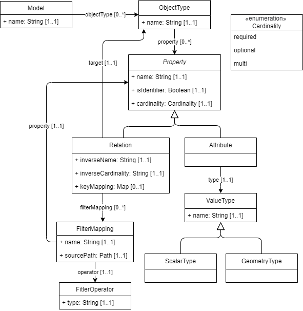

This document specifies the IMX model mapping. The IMX model mapping expresses a mapping between one or more source data models, to a target data model, and is designed to be used as configuration for an IMX orchestration process.
Status of this document
This is a working draft that can be changed, removed or replaced by other documents at any time. It is not a stable document.
1. Introduction
This section is non-normative.
This document describes a proposed standard for mapping logical source data models to a logical target data model, in the context of IMX.
The IMX model mapping standard plays an important role in the reference architecture of the IMX orchestration process. The mapping serves as a formal translation syntax from one or more source models based API data sources towards one a target model based API data source. This mapping is at the basis of the actual IMX orchestration process.
Chapter 4: Model representation specifies the model to which a source model must be mapped to be able to be put into the IMX orchestration engine. Basically a model consists of objecttypes and properties. Filter mapping specify how source object are selected to match target objects according to defined filter operations/queries.
Chapter 5: Mapping abstract model implements the model defined in chapter 4 into a model for mapping between a source - and a target model containing all the necessary mapping rules. Objecttype mappping, path mapping (navigating through a source model) and property mapping are the basic concepts. Operators as result combiner, result mapper and matcher allow for defining complex combinations of chained results.
Chapter 6: YAML specification presents the YAML encoding of the abstract mapping model. This YAML IMX Mapping specification serves as a specification for YAML instance documents into the IMX Orchestration engine for actual operating on a set of source and target API's.
In annex 1 the mapping specifications of the IMX-Geo model are presented. These are presented in an excel spreadsheet and serve as input for the machine readable YAML formalisation presented in this document.
2. Design Principles
This section is non-normative.
The mapping is implementation independent
An important design principle is that the mapping should be independent of technical implementations, data format, or data modeling standards. This allows for broad use of the mapping across disparate data sources and environments.
The mapping is declarative
The mapping should be declarative. By declarative we mean that the mapping is described in a high level abstract language, describing the intent of the mapping, without explicit procedural logic. This affords various different usage scenario's, like employing different procedural strategies during the execution of the mapping, while keeping the mapping simple to express.
The mapping is expressed in terms of logical models
In order to be independent of technical data models and corresponding data formats, the mapping should be expressed at the logical level. A logical data model establishes the structure of data items, and their relationships, yet is independent of their technical implementation. This contributes to the mappings implementation independence.
Note
The mapping is independent of data modeling standards
Their exist a variety of different data modeling standards, all with their own intricacies in the way they define data items. The mapping should be independent of these. This will allow for broad applicability of the mapping.
3. Basic concepts
This section is non-normative.
The IMX model mapping plays an important role in the reference architecture of the IMX orchestration process. The mapping serves as a translation from one or more source model based API data sources towards a target model based API data source.
The IMX model mapping is the core of what drives the orchestration process that will handle requests to the target API.
The default way of expressing a model mapping is in [YAML] format. In recent years, [YAML] has emerged as a concise, readable format to represent information, which is widely applied as a configuration file format.
4. Representing models for orchestration
To make the IMX mapping and orchestration independent of underlying modeling standards and implementations, a simple internal logical data model representation is used, to which a source model must be mapped.
Note

Figure 2Model representation for orchestration
4.1 Model (Model)
A model is the representation of a logical data model which can be used in an IMX orchestration engine.
A logical data model is used to define data items which which are used to describe objects.
A data item consists of a subject, a property and a value, which together represent an elementary statement about an object.
An object is anything that is the subject of a data item. A contextually grouped set of data items about the same object forms a data object.
Overview attributes
Name
Multiplicity
Definition
name
1..1
The name of the model.
Overview relations
Name
Multiplicity
Definition
objectType
0..*
A relation pointing to an object type that is part of the model.
4.2 Object type (ObjectType)
An object type represents the set of a type of object.
A multiplicity is an enumeration item which is used to express how many times a data item with the same property, and the same subject, can be expected to occur.
Overview enumeration items
Name
Definition
required
Occurs exactly once.
optional
Can occur at most once.
multi
Can occur multiple times.
4.5.2 Relation (Relation)
A relation is a property which expresses a relationship between the relation-bearing object and a target object. It is a sub-type of Property.
Overview attributes
Name
Multiplicity
Definition
inverseName
1..1
The inverse name of the relation, to be used to traverse the relation in the inverse direction.
A geometry type is a value type which represents a geometry.
5. Mapping abstract model
The following model implements the model defined in chapter 4 into a model containing all the necessary mapping rules. Objecttype mappping, path mapping (navigating through a source model) and property mapping are the basic concepts. Operators as result combiner, result mapper and matcher allow for defining complex combinations of chained results.
A model mapping is a set of declarations which afford the combination and translation of one ore more source data model based data sources to a target data model based data source.
A source relation mapping is a set of declarations which define a virtual relation between object types in one or more source models. Virtual, in that the relation does not actually exist in the source models, but exists for the mapping process, through this mapping.
5.8 Object type mapping set (ObjectTypeMappingSet)
An object type mapping set is a set of declarations which express the mapping of one or more data items using a specicic source root to a target-model-object-type-based data object.
A path, or path expression, is a set of declarations which, conceptually, represent a possible route through a graph of data items. A path is comprised of an ordered, non-unique sequence of segments. Each segment represents a step in that route.
An ordered, non-unique sequence of segment strings.
5.12 Path repeat (PathRepeat)
A path repeat is a set of declarations which describe how the path mapping evaluation should be repeated.
Overview relations
Name
Multiplicity
Definition
untilMatch
1..1
A relation that points to a matcher, which, when it matches, stops the repetition.
5.13 Component (Component)
A component is an abstract class of things that can process the result of one or more path mapping evaluations and produce a new result.
Overview attributes
Name
Multiplicity
Definition
type
1..1
The type of the component.
options
0..1
A map (String -> Object) of options that the component can use to create results.
5.13.1 Result combiner (ResultCombiner)
A result combiner is a component which takes as input the result of a previous element in a sequence and combines it with the current element in the sequence.
a key location, whose value is a string which expresses the file path of the mapping source file.
a key profile, whose value is a string which identifies the profile of the model. The profile will be used to by the orchestration engine to load the model using the appropriate model loader.
A KeyMapping node is a mapping node which defines the match of a source relation mapping's target object's key property, by using the name of the key properties as its keys and the names of the key value matching properties of the source relation mapping's source object as the corresponding values.
It MUST have a property key with a string value property reference, that is the value of the name of the referenced property of the source relation mapping's target object.
The evaluation of the path mapping(s) SHOULD yield a path mapping result that matches the type of the property in the target model which is referenced by propertyName.
A key-value PathMapping nodeMUST have zero or one ifMatchType key, whose value is a ObjectTypeRef node. When specified, this path mapping is only evaluated if the source root in the current property mapping evaluation matches.
This annex contains the mapping specifications as they are designed to map the IMX-Geo model elements to the basemodels. These mapping specifications are described in an excel spreadsheet and are the input for formulation of the machine readable YAML mapping specifications as they are developed and presented in this document. The mappings specifications furthermore are input for developing the content of the knowledge graph.
The mapping specifications consist of mapping/relating information elements from the IMX-Geo model to information elements from the models of key registers or any model that is considered and included as a source model of the IMX-Geo cross domain model.
Typically the mapping specifications follow this context chain: domain - objecttype - property - valuetype.
The excel doc containing the mapping specifications is accesible through this link: mappingspecifications
The excel contains a number of columns of which the content is explained in the excel itself.
As well as sections marked as non-normative, all authoring guidelines, diagrams, examples, and notes in this specification are non-normative. Everything else in this specification is normative.
The key words MUST and SHOULD in this document
are to be interpreted as described in
BCP 14
[RFC2119] [RFC8174]
when, and only when, they appear in all capitals, as shown here.